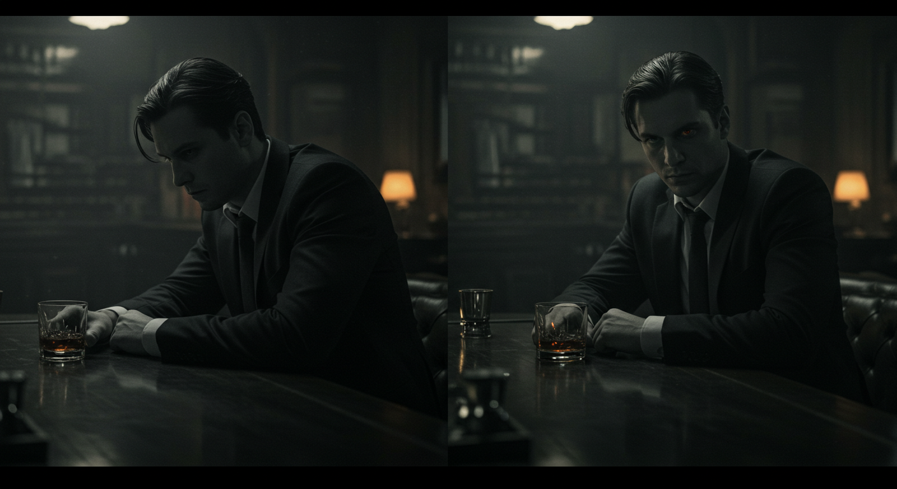
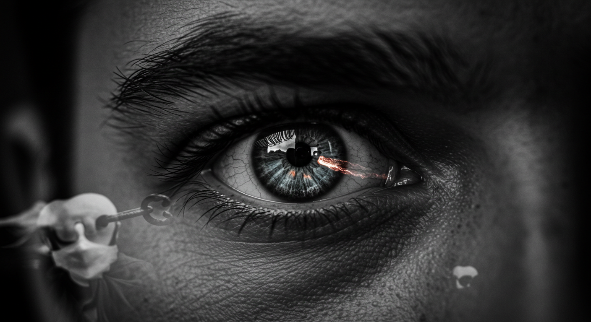

-

THE GAZE PROTOCOL
A masterclass on shifting from observer to actor
A PREMIUM IRONCLAD FOUNDATION COURSE -
MODULE 1
The Physics of the Gaze
Why your eyes dictate your reality
-
OBSERVER VS. PARTICIPANT
Your gaze is a non-verbal switch that decides your role in any social moment. Ask yourself: “Am I watching the story, or am I in the story?”
 The observer feels safe but powerless; the participant feels exposed but powerful. Averted eyes feed your internal monologue of fear. Direct eyes spark interaction and move the tension outward.
-
THE THREE LEVELS OF EYE CONTACT
Calibrate your intent with surgical precision.
Level Description Intent 1. Social Glance Brief (1–2 s), often with a nod. “I acknowledge you.” 2. Look of Interest Longer (3–4 s) with a slight smile. “I’m interested.” 3. Intimate Gaze Soft focus that breaks norms. “I see you.” The protocol stays at Level 2—confident yet calibrated.
-
MODULE 2
The 3-Second Protocol
From “caught” to “connected”
-
THE FLINCH-AND-FLEE REFLEX
When her eyes lock onto yours, most men panic and dart away—confirming creep vibes. Being “caught” is actually an unspoken invitation to lead.
Your protocol turns that alarm into opportunity.
-
STEP 1 · ANCHOR
First second
Do not look away. Hold the gaze. To her, it says the look was intentional. To you, it overrides panic.
 Your gaze is the anchor—steady amid internal waves. -
STEP 2 · ACKNOWLEDGE
Second second
Shift the moment from a stare to appreciation:
- Slight, confident smile – default signal of approval.
- Slow nod – formal but powerful.
-
STEP 3 · ACT
Seconds 3 & 4
Read her data, then:
- Green light – she smiles, holds, or re-checks ? approach.
- Red light – she looks away and never looks back ? disconnect with grace.
-
DRILL · PRE-LOAD YOUR PROTOCOL
Preparation is power. Write your plan so it fires automatically in the field.
-
MISSION COMPLETE
You now convert eye contact into confident initiation. No more getting “caught”—you create the moment.
The Gaze Protocol completed.